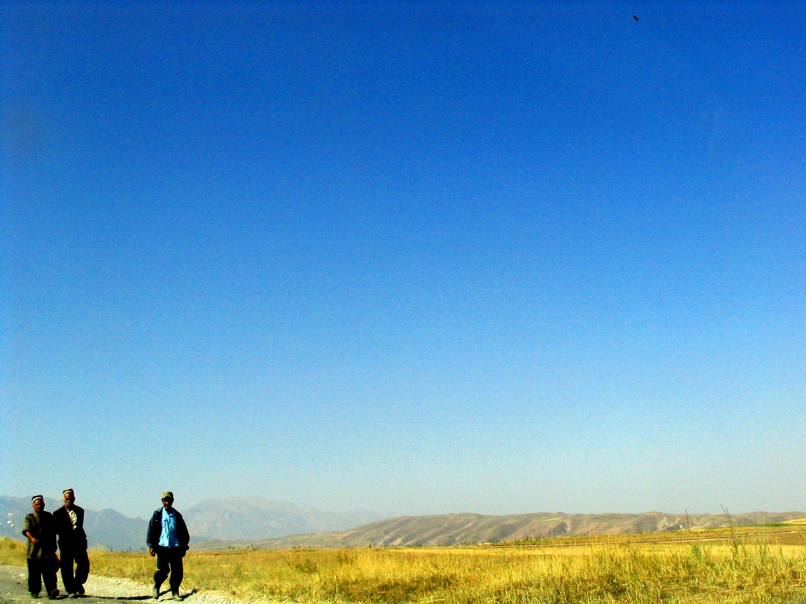
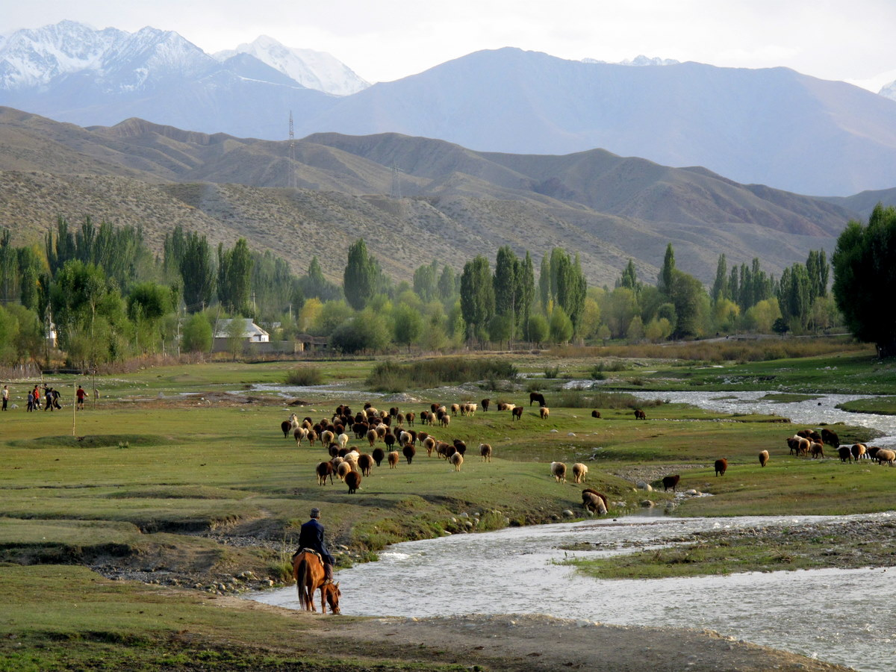

Баткенская область
Свадебные обряды, праздники, народные традиции.
Узнать больше

Ошская область
Весенние обряды, музыка, народные гуляния.
Узнать больше
Джалал-Абадская область
Сказания, фольклор, ритуалы в горах и долинах.
Узнать больше
Нарынская область
Кочевые традиции, праздники и кумысные обряды.
Узнать больше

Иссык-Кульская область
Фестивали, обряды у озера, летние традиции.
Узнать больше
Таласская область
Манасовские традиции, героические эпосы и память.
Узнать больше
Чуйская область
Современные традиции и обычаи с древними корнями.
Узнать больше